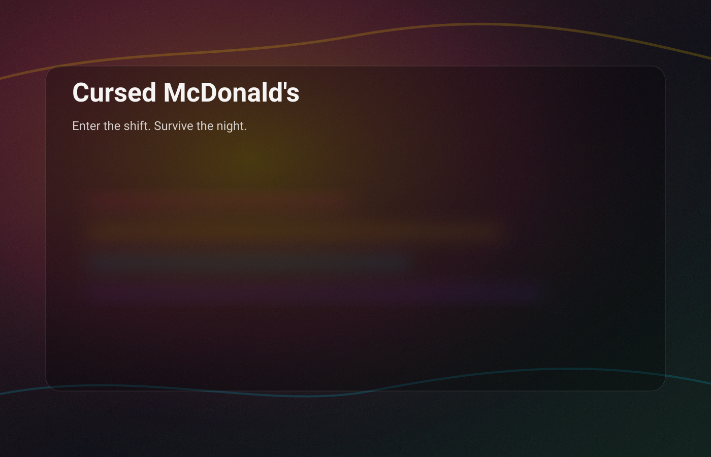

Information
Warning: strong visual effects may impact older devices.
Cursed McDonald's was originally a paper game that was created for common use. It was never expected that this game would be a superhit. It had gained large popularity in 2025, where many players played the game. It was a big hit. But the creator wanted more. After some time, he decided to make the game online, and published the game on GitHub. But that still wasn't enough. So he eventually created this website, that is free to use, and has full support for all devices.
Many people were disappointed with the original online game, because it had many bugs and glitches, and the UI was very bad. Nobody liked the original version, because of the poor features. After a long time, players had got what they wanted: A new remastered version of Cursed McDonalds. This was very good, and many more people followed the franchise of Cursed McDonalds.
The Cursed McDonalds team is expanding, and will gain more people to work on it. We are ready to hire anyone who wants the job. This is the job that many people dream about. For this reason, the requirements are very high. Not everyone can become a Cursed McDonalds worker.
Cursed McDonalds will also get a menu, so that you can understand more about the Cursed McDonalds franchise.
Many more updates are coming, so you will see them in the future. If there are any bugs, you can report them on the report page.
